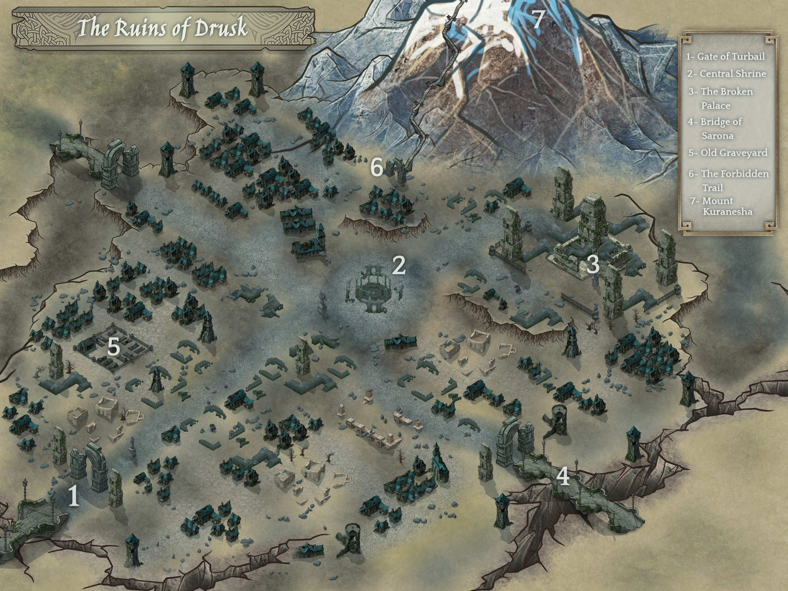
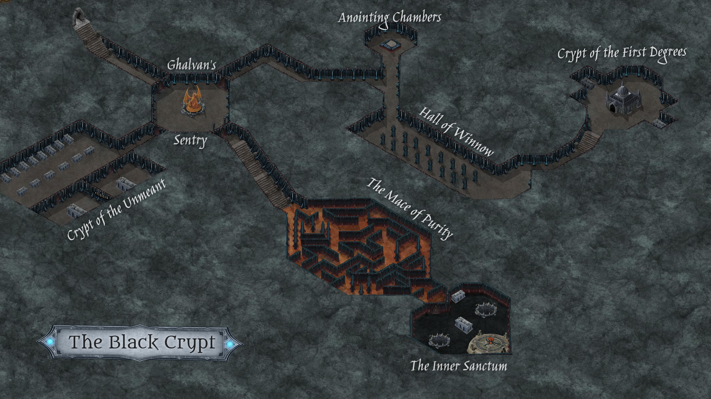

Created Mittwoch 20 Mai 2020

Fort Dalos
- siehe eigenen Seite
Arkenwoods
- siehe eigenen Seite
Valun
- Fluß Atal mündet in Valun ins Meer
- kleiner Wachturm neben (~200m entfernt) westlicher Straße mit Miliz
- in Valun etwas gebrannt, paar Leute heben Gräber aus
- Fischerdorf, kleiner als Fort Dalos, aber größerer Hafen auch mit Handelsschiffen
- Hafenkneipen, dorf lebt vom Hafen
- Taverne "The One-Eyed Lynx":
- gewürfelt um Gold/Silber
- fight-Ring, bandagierte Knuckels
- über Bar 4 Meter langer Tigerhai, Netze an den Wänden, rustikale Seefahrerbar
Gwydur
- siehe eigene Seite
Lauris
- Laurin hier nicht wirklich befestigt, kaum militärisch
- ca. so groß wie Fort Dalos
- lebt vom Handel mit Baraxia
- ähnliches Bild wie sonst in Drunai - Revolte nicht ganz kampflos, haben aber schon aufgeräumt
- Tavern: Prancing Gryphon, gibt dort auch Abenteurer
Ruins of Drusk

Die Schwarze Krypta

- am Eingang eine Treppe, die Falle auslöst (Treppe = Rutschbahn + giftiges Gas)
- Ghalvan's Sentry ist eine mechanische Drachenstatue, drehbar, die (von vier) Tür ist offen wo sie hinschaut
- Crypt of the unmeant = Sarkophage mit Beamten, 2 Gräber von den Unvermeinten (m+w, Owyn, Azelia, uneheliche Kinder Kuraneshs)
- Anointing Chamber wohl zur Mumifizierung, noch Artefakte, teilweise magisch dort
- Hall of Winnow - Falle mit Druckplatten:
- zuerst Ketten aus Säulen heraus, drehen sich dann
- dann Giftgas
- dann Web spells auf Leute
- am anderen Ende ein Hebel, schaltet alles ab. Außerdem 2 große Steinstatuen
- Crypt of the First Degrees:
- Pavillon mit Sarg Turbails und Mordglanz
- Sarg von Apokai, zerstört
- Sarg von Syvilla, halboffen mit Skelett davor (das den Key genommen hatte)
- Ghalvan's Sentry wenn alle 4 Keys in der Haupttür:
- jeden turn wisdom save, sonst Kontrollverlust über Körper, muss nächstes Ziel angreifen
- langsam unveiled Rätsel auf Kelch in den Händen der Statue - man muss königliches Blut in den Kelch tropfen lassen
- dann geht die Tür auf
- Maze of Purity
- Labyrinth als skill challenge
- wir haben genommenen Weg mit Chalk markiert
- Inner Sanctum
- riesige Halle, 100 feet hoch
- in der Mitte ein schwarzer, riesiger Sarg, links ein Sarg, rechts ein Altar
- alles wirkt rot
- 2 Brunnen
- am anderen Ende des Raumes ein riesiger Patzen aus Fleisch, pulsierend - ein Herz
- Herz auf Altar, viele schwarze Adern in alle Richtungen zu 6 Säulen im Raum (sehen aus wie Geschwüre aus Schatten)